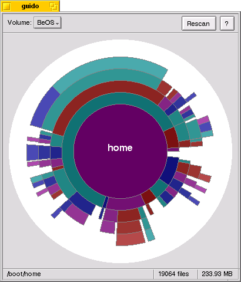

DiskUsageDiskUsage shows a graphical representation of how the space on your volumes is utilized. It uses concentric circles to represent different levels in the file system hierarchy. It is useful for answering the question, "Where has all my disk space gone?" And sometimes it's fun just to look at the pictures.
Here is a picture of DiskUsage in action, so to speak.

The circle in the middle represents my /boot/system directory.
Each segment of the ring immediately outside that circle represents a file or
directory within /boot/system. And so on.
Startup. You can launch DiskUsage from the Tracker, either directly or by dropping a volume or folder on its icon; or from the Terminal, optionally passing the names of one or more files or folders as arguments. If you launch DiskUsage without specifying a volume, it will wait until you drop one or more volumes or folders on its window or select a volume from the menu.
While DiskUsage is scanning a volume, it displays a status bar showing its progress. Multiple volumes are scanned in parallel (each in its own thread). You can view the progress on a volume by selecting that volume from the menu.
The main display. When DiskUsage finishes scanning a volume, it displays a graphical representation of the volume's files and directories. As you move the mouse over each part of the picture, information about each file or directory appears in the area at the bottom of the window. You can resize the window to increase or decrease the number of levels that DiskUsage displays.
Zooming. You can "zoom" in on a directory by clicking the primary mouse button on it. The picture is redrawn with that directory in the center circle. You can zoom out one level by clicking the center circle. At the outermost level, the center circle represents the volume itself, showing free and used space as pie slices.
Pop-up menu. Clicking the secondary mouse button on a part of the picture pops up a menu with Tracker-like options applicable to that file or directory. For directories, the menu includes an option to rescan that directory and its subdirectories (not the entire volume). This is useful since DiskUsage does not monitor changes to the file system.
Drag-and-drop. You can drag files and directories from DiskUsage to other applications (or to the desktop, the trash, etc.) with the primary mouse button. You can drop volumes and folders on DiskUsage's window to zoom directly to them.
Other controls. The buttons in the top right corner of the DiskUsage window rescan the selected volume and display the documentation (this file).
Notes:
DiskUsage reports for a directory includes files in subdirectories too. A directory counts as a file.DiskUsage ignores symbolic links.DiskUsage uses, you can change them with your favorite resource editor.Thanks to Steffen Gerlach for creating the Windows Scanner utility, from which I took the idea for using concentric circles to represent disk usage.
Thanks to the Vim development team for creating the best programmer's editor on the planet, with which DiskUsage's original code and documentation were lovingly hand-crafted.
Thanks to the folks at Be for creating such a kick-butt OS. It has made programming fun again.
Thanks to Mike Steed for doing the programming. All the code is original.
DiskUsage used to be called guido by it's original author. The name guido originated from GUI + du -- the command-line disk usage utility. Plus, one of his favorite languages, Python, was created by a fine programmer named Guido.
DiskUsage sees only one of them. Why?DiskUsage's window works, but dropping it on the icon does not work (unless you force it by holding the Ctrl key while you drag). Why?!
DiskUsage is Copyright © 1999 Mike Steed. You are free to use and distribute this software as long as it is accompanied by this documentation and copyright notice. The software comes with no warranty, etc.